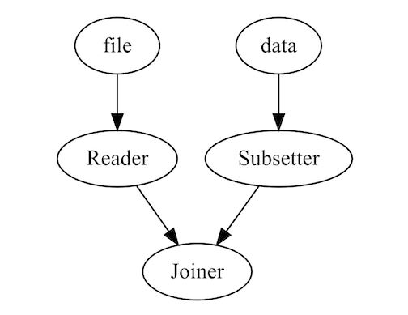

The goal of sewage is to provide a light-weight pipelining interface for data analyses. Rather than construct long scripts with intermiediate datasets or processes, you can construct a single pipeline and run it in a single call.
Installation
You can install the development version of sewage from Github:
devtools::install_github("mwhalen18/sewage")Example
Below is an example of how to construct a simple pipeline.
You can use any function as a component in the pipeline, including custom functions you define or import from an external source.
subset_data = function(x) {
subset(x, cyl == 6)
}
summarizer = function(x) {
return(summary(x[['disp']]))
}Currently, there are 3 components ready for use: Nodes, Splitters, and Joiners. Nodes take one object as input and return exactly one object. Splitters take in exactly one object and may return any number of outputs greater than 1. Joiners take in multiple objects and return 1 object according to the method you pass to the Joiner (More on these components below).
pipeline = Pipeline()
pipeline = pipeline |>
add_node(component = readr::read_csv, name = "Reader", input = "file", show_col_types = FALSE) |>
add_node(component = Splitter(), name = "Splitter", input = "Reader") |>
add_node(component = subset_data, name = "Subsetter", input = "Splitter.output_2") |>
add_node(component = summarizer, name = "Summarizer", input = "Splitter.output_1")Note outputs of a Splitter are accessible by specifying the name of the splitter component (In this case Splitter) suffixed with the outgoing edge in the format {name}.output_{i}.
The first node in your pipeline should specify the argument that will be passed into the pipeline when we execute it (More on this below).
We can easily visualize our pipeline using the draw method.
draw(pipeline)
Here we execute the pipeline with the run command. It is important to note that the argument you pass to run should match the input argument of your first node in your pipeline. In this case we are passing a file argument in run and similarly our first node is set to receive a file argument as input.
You may choose any argument name you like, as long as these two arguments match!
result = run(pipeline, file = 'temp.csv')
#> New names:
#> • `` -> `...1`We can now access the results of our terminating nodes. A terminating node is any node that is not specified as input. By default when the pipeline is run, each node will overwrite the output of its input node. Therefore any node that is not fed forward to a new node will return output. In the case of this pipeline, the Subsetter and Summarizer edges are our terminating nodes. Therefore, we can access their results in the outputs object of the pipeline
pull_output(result, "Subsetter")
#> # A tibble: 7 × 12
#> ...1 mpg cyl disp hp drat wt qsec vs am gear carb
#> <chr> <dbl> <dbl> <dbl> <dbl> <dbl> <dbl> <dbl> <dbl> <dbl> <dbl> <dbl>
#> 1 Mazda RX4 21 6 160 110 3.9 2.62 16.5 0 1 4 4
#> 2 Mazda RX4 W… 21 6 160 110 3.9 2.88 17.0 0 1 4 4
#> 3 Hornet 4 Dr… 21.4 6 258 110 3.08 3.22 19.4 1 0 3 1
#> 4 Valiant 18.1 6 225 105 2.76 3.46 20.2 1 0 3 1
#> 5 Merc 280 19.2 6 168. 123 3.92 3.44 18.3 1 0 4 4
#> 6 Merc 280C 17.8 6 168. 123 3.92 3.44 18.9 1 0 4 4
#> 7 Ferrari Dino 19.7 6 145 175 3.62 2.77 15.5 0 1 5 6
pull_output(result, "Summarizer")
#> Min. 1st Qu. Median Mean 3rd Qu. Max.
#> 71.1 120.8 196.3 230.7 326.0 472.0Multiple Entrypoints
It is also possible to pass in multiple entrypoints by specifying the inputs in your arguments. This allows you to process multiple documents and bring them together using a Joiner later in your pipeline.
The Joiner will take multiple inputs and convert them to a single output in the pipeline according to the function specified. This component works nicely for dplyr-like joins, but is not restricted to these methods.
library(dplyr)
pipeline = Pipeline()
pipeline = pipeline |>
add_node(read.csv, name = "Reader", input = "file") |>
add_node(subset_data, name = "Subsetter", input = "data") |>
add_node(Joiner(method = dplyr::bind_rows), name = "Joiner", input = c("Reader", "Subsetter"))
output = run(pipeline, file = "temp.csv", data = mtcars)
draw(pipeline)
Using these three components (Nodes, Splitters and Joiners) you can construct complex data pipelines and run them in a single call.
Why sewage?
What is the point of sewage over more robust orchestrations tools like targets or Airflow? First, sewage is not an orchestration tool. Its primary purpose is to help modularize and organize complex data analysis scripts. If you have ever opened a single script to find multiple functions, intermediate datasets, visualizations, tests, models, and outputs, then sewage may be a starting place to aid in organization.
If you feel comfortable using packages like targets or Airflow you probably should.